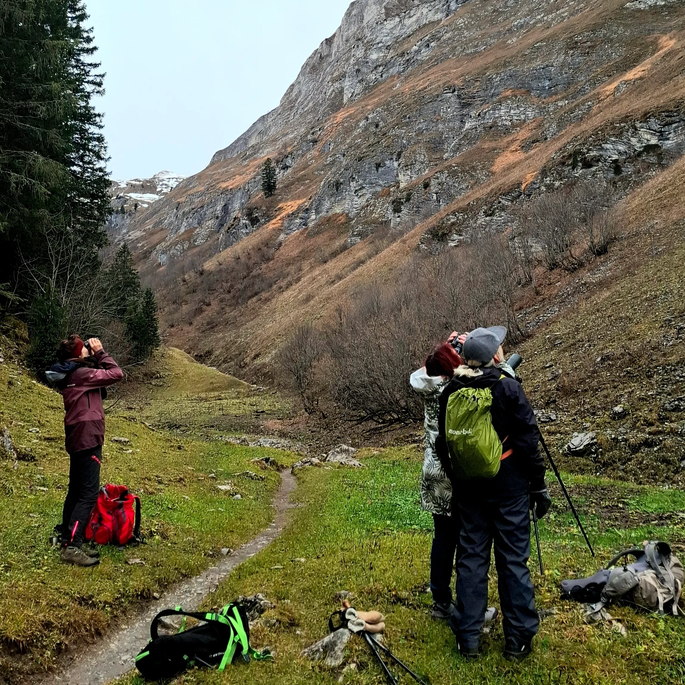
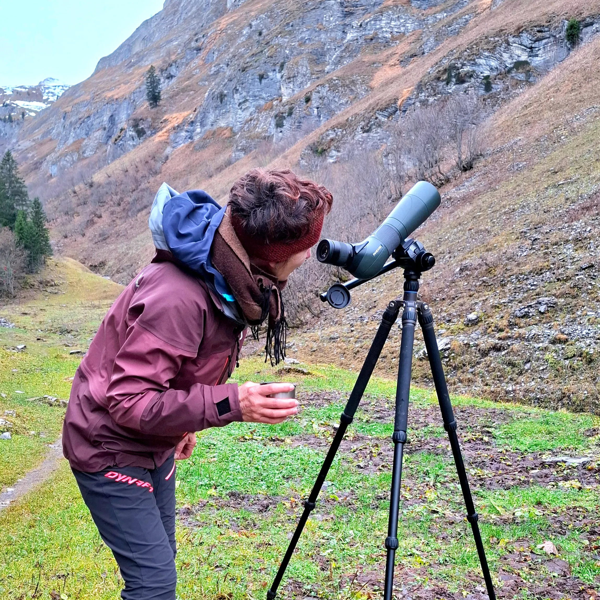
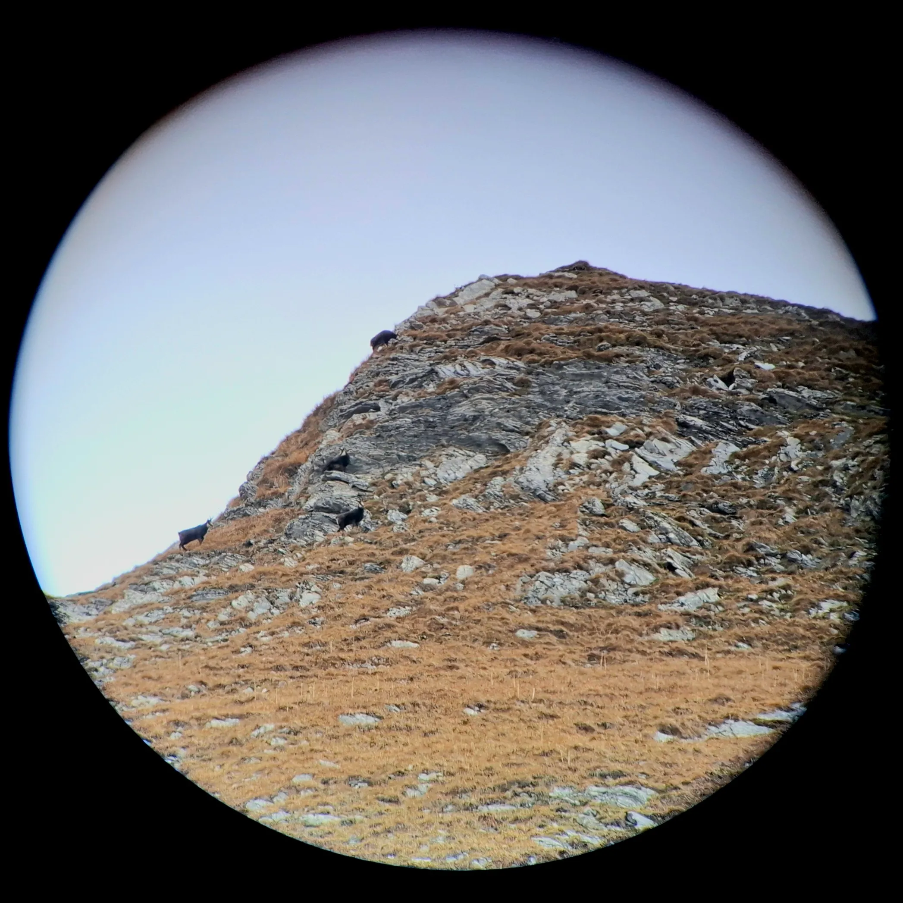

Pour la dernière sortie Montagn'Art 2025, j'ai eu le grand plaisir d'accompagner mon groupe à la découverte de l'acrobate des rochers, Rupicapra rupicapra, le chamois des Alpes. 🔎 Les participantes ont pu découvrir ces caractéristiques physiques, son histoire, ses adaptations à l'hiver, ses cornes et surtout son rut.
Grâce à des cornes et des crânes de spécimens, elles ont pu voir les détails de ces animaux. Équipées de jumelles et d'une longue vue, nous avons pu observer le quotidien de la chèvre des rochers ⛰️
Verdict final, ça valait le coup de défier les prévisions météo du dimanche matin car la chance et le soleil nous ont souri 🌞
Merci pour votre bonne humeur et ce magnifique moment de partage en montagne 😄


